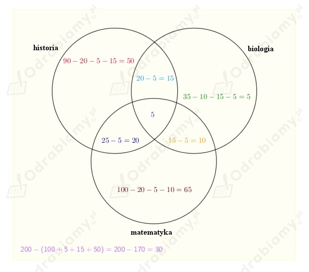

| Prawa de Morgana |
a)
Wiemy, że:
Wiemy, że:
Zatem:
b)
Wiemy, że:
Wiemy, że:
Zatem:
Z treści zadnia wiemy, że:
Zatem:
oraz:
Założenia:
Teza:
Dowód:
co należało uzasadnić.
Rzucamy dwukrotnie kostką.
Niech Ω - zbiór wszystkich możliwych zdarzeń elementarnych, więc:
A - w każdym rzucie otrzymamy inną liczbę oczek
Obliczamy prawdopodobieństwo zdarzenia A:
B - ani raz nie otrzymamy szóstki
Obliczamy prawdopodobieństwo zdarzenia B:
A ∩ B - w każdym rzucie otrzymano inna liczbę oczek i ani raz nie wypadła szóstka
Obliczamy prawdopodobieństwo zdarzenia A ∩ B:
Obliczamy wartości prawdopodobieństw:
W pewnej grupie osób każdy zna język angielski lub niemiecki.
Niech A - osoba zna język niemiecki, B - osoba zna język angielski.
Z treści zadania wiemy, że:
Możemy zapisać, że:
ponieważ prawdopodobieństwo wylosowania ucznia znającego jeżyk niemiecki lub angielski
w danej grupie jest pewne.
Należy obliczyć prawdopodobieństwo tego, że losowo wybrany uczeń zna oba języki, a więc:
Z treści zadania wiemy, że:
Wybieramy jedna osobę.
Wiemy, że jeśli Ω - zbiór wszystkich możliwych zdarzeń elementarnych, to:
Zapisując wartości na diagramie idziemy "od tyłu", to znaczy najpierw zapisujemy liczbę osób, które
lubią zarówno matematykę, historię i biologię (5 osób), następnie 20 osób, które lubią historię
i biologię, kolejno 15 osób, które lubi matematykę i biologię, itd.
Dostajemy diagram:

A - losowo wybrana osoba nie lubi żadnego języka
Obliczamy prawdopodobieństwo zdarzenia A:
W zadaniu będziemy korzystać ze wzoru na prawdopodobieństwo sumy trzech zdarzeń:
Losujemy ze zbioru {1, 2, 3, 4, ..., 100} jedną liczbę.
Niech Ω - zbiór wszystkich możliwych zdarzeń elementarnych, więc:
A - wylosowano liczbę podzielną przez 3
zatem co trzecia liczba jest podzielna przez 3.
Obliczamy prawdopodobieństwo zdarzenia A:
B - wylosowano liczbę podzielną przez 4
zatem co czwarta liczba jest podzielna przez 4.
Obliczamy prawdopodobieństwo zdarzenia B:
C - wylosowano liczbę podzielną przez 7
zatem co siódma liczba jest podzielna przez 7.
Obliczamy prawdopodobieństwo zdarzenia B:
A ∩ B - wylosowano liczbę podzielną przez 3 i 4
zatem co dwunasta liczba jest podzielna przez 3 i 4.
Obliczamy prawdopodobieństwo zdarzenia A ∩ B:
A ∩ C - wylosowano liczbę podzielną przez 3 i 7
zatem:
Obliczamy prawdopodobieństwo zdarzenia A ∩ C:
B ∩ C - wylosowano liczbę podzielną przez 4 i 7
zatem:
Obliczamy prawdopodobieństwo zdarzenia B ∩ C:
A ∩ B ∩ C - wylosowano liczbę podzielną przez 3, 4 i 7
zatem:
Obliczamy prawdopodobieństwo zdarzenia A ∩ B ∩ C: